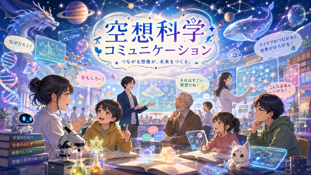
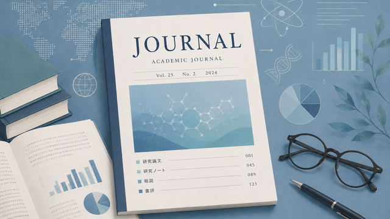
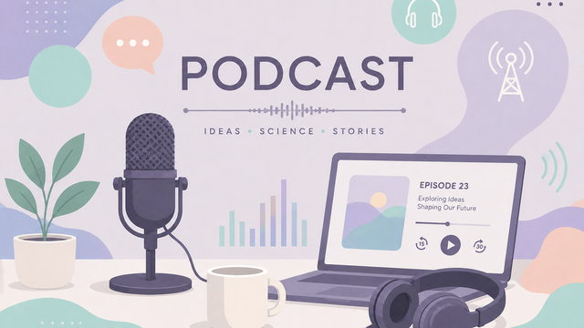
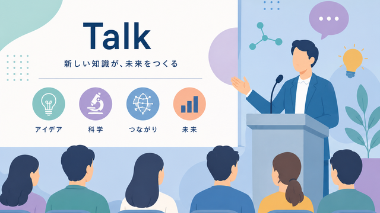
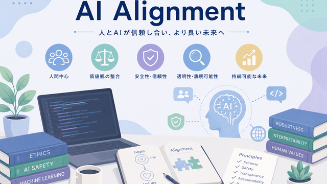
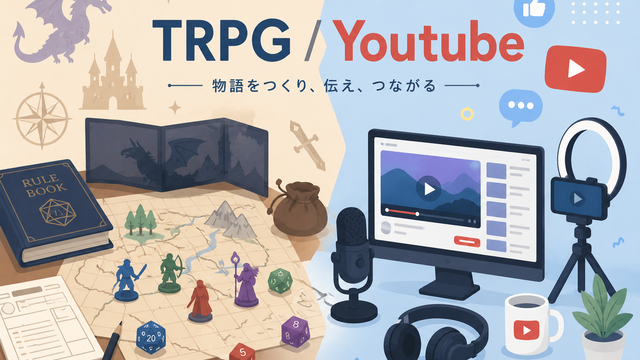
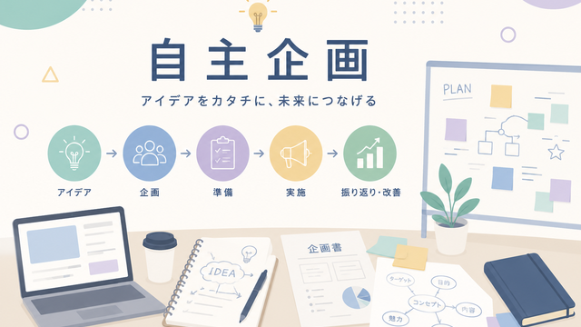
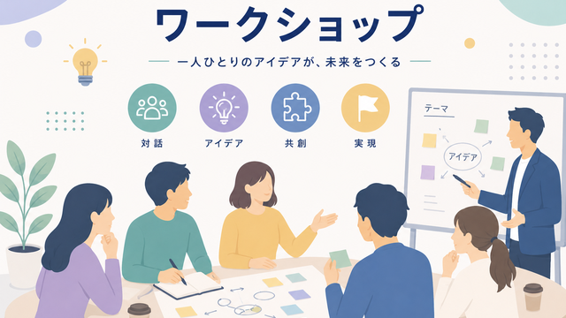
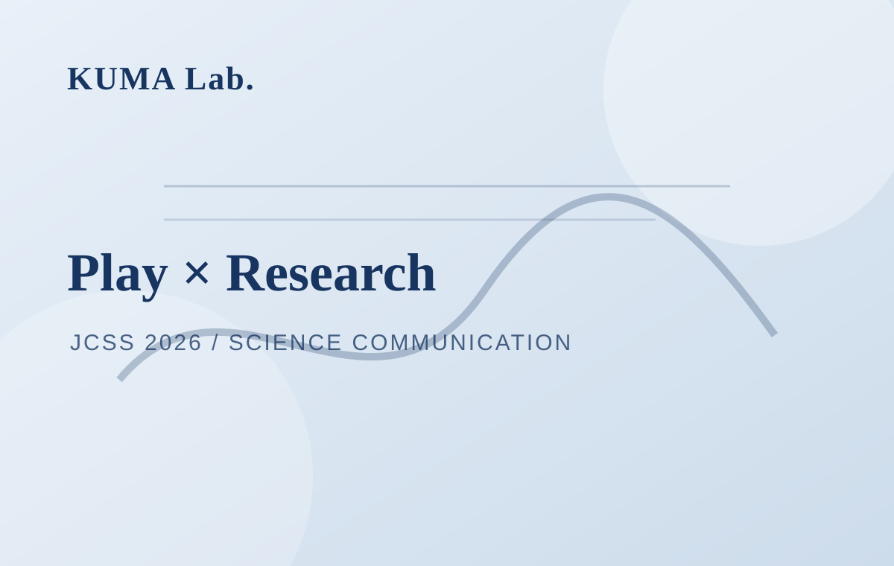
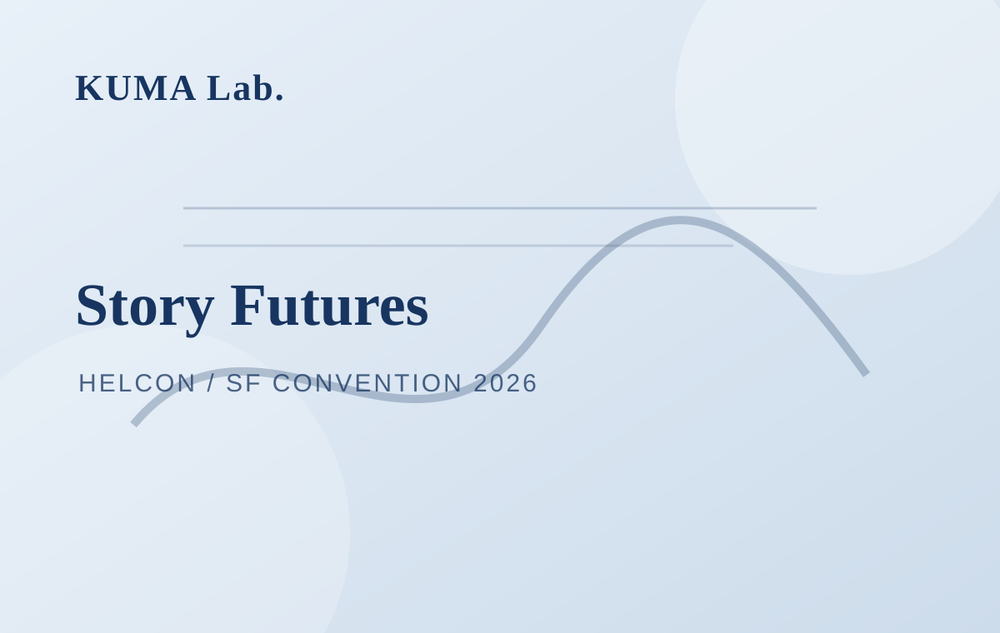

Science
サイエンスコミュニケーションやSFに関する各種リサーチやワークショップ、イベント活動。
Back to Works →Science Archive
作品・実践一覧

空想科学コミュニケーションはじめました
SFプロトタイピングやSF思考を科学コミュニケーションへ応用する方法を、作家・研究者・編集者らが議論するイベント。

雑誌『地球・宇宙・未来』第2巻第1号
U-ELSIが発行する雑誌『地球・宇宙・未来』第2巻第1号の掲載情報。

「研究の新たなアウトプット」とは？
Academimic合同会社の浅井順也氏と玖馬巌による、研究のアウトプットをテーマにしたポッドキャスト回。

G空間EXPO muPS関連講演
G空間EXPO 2025におけるmuPS関連イベント。最先端科学技術を専門家・芸術家・小説家らと議論する講演・パネル。

超知能がある未来社会シナリオコンテスト
超知能がある未来社会シナリオコンテスト2024佳作『機械仕掛けの翼とともに』の掲載ページ。

4人のサイエンスコミュニケータ―が行く！
サンドキャッスルTRPG関連のYouTube動画。サイエンスコミュニケーションと物語表現に関わる活動記録。

自主企画「サイエンスコミュニケーションとサイエンスフィクション」
毎年秋に京都で開催されているローカルSFコンベンション「京都SFフェスティバル」の情報ページ。2025年に自主企画「サイエンスコミュニケーションとサイエンスフィクション」を開催。

創作サポートセンター 公開講座
後日公開予定。

はこだて国際科学祭
後日公開予定。

プレイがつなぐ研究と社会：市民・クリエイター・SF作家による実践を通じて
市民・クリエイター・SF作家による実践を通じて、プレイが研究と社会をつなぐ可能性を扱う発表。

作家×研究者、物語で未来をつくる
後日公開予定。